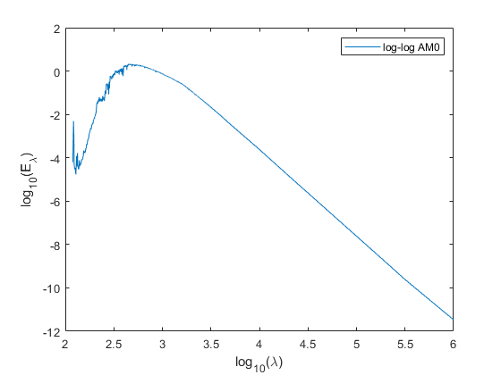

SolarSpectrum
Navigate to: Home | Alphabetic list | Grouped list Source code: SolarSpectrum.m
Returns a specific standardized solar spectrum, AM 0 (extraterrestrial) or AM 1.5 (air mass 1.5)
Contents
Syntax
rv = SolarSpectrum(type)
Input Arguments
- type: character string.
| Value | Meaning |
| 'AM0' | Extraterrestrial irradiance spectrum according to ASTM G173-03, from 280 nm to 4000 nm |
| 'AM15_GlobalTilt' | Global irradiance spectrum on tilted surface, with air mass 1.5, according to ASTM G173-03, from 280 nm to 4000 nm |
| 'AM15_Direct_Circumsolar' | Direct and circumsolar irradiance spectrum on tilted surface, with air mass 1.5, according to ASTM G173-03, from 280 nm to 4000 nm |
| 'AM0_ASTM_E490' | Extraterrestrial irradiance spectrum according to ASTM G173-03, from 119.5 nm to 1 mm = 1e6 nm |
Output Arguments
- rv: struct with fields lam, val (both double vectors) and name (character string), the requested solar spectrum
Algorithm
At first call, loads the spectra from 'solarSpectra_AM0_AM15_ASTM_G173_03.mat' and 'solarSpectrum_AM0_ASTM_E_490.mat', storing them in persistent variables to speed up subsequent calls. Returns requested variant. These spectra have both higher resolution and wavelength range compared to the CIE daylight spectra.
See also
Usage Example
function ExampleSolarSpectrum() AM0 = SolarSpectrum('AM0'); AM15 = SolarSpectrum('AM15_GlobalTilt'); AM15_direct = SolarSpectrum('AM15_Direct_Circumsolar'); figure();clf;hold on; plot(AM0.lam, AM0.val); plot(AM15.lam, AM15.val); plot(AM15_direct.lam, AM15_direct.val); legend({'AM0','AM1.5','AM1.5 direct'}); xlabel('\lambda (nm)'); ylabel('spectral irradiance in W/(m^2 nm)'); AM0_E490 = SolarSpectrum('AM0_ASTM_E490'); figure();clf; plot(log10(AM0_E490.lam),log10(AM0_E490.val)); xlabel('log_{10}(\lambda)'); ylabel('log_{10}(E_\lambda)'); legend('log-log AM0'); end